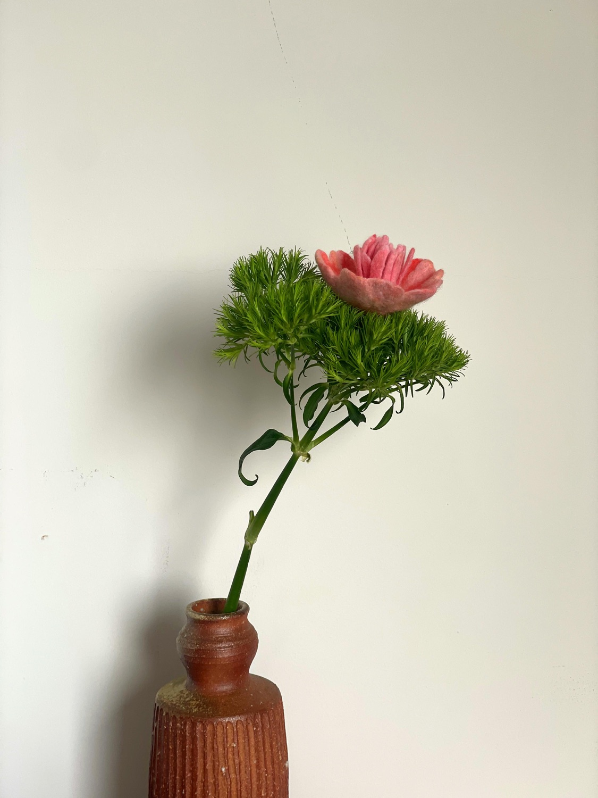
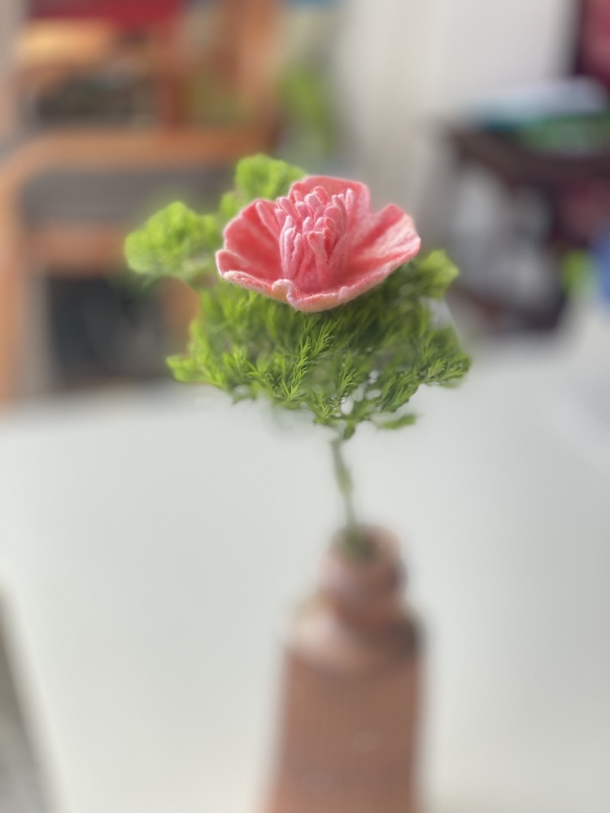
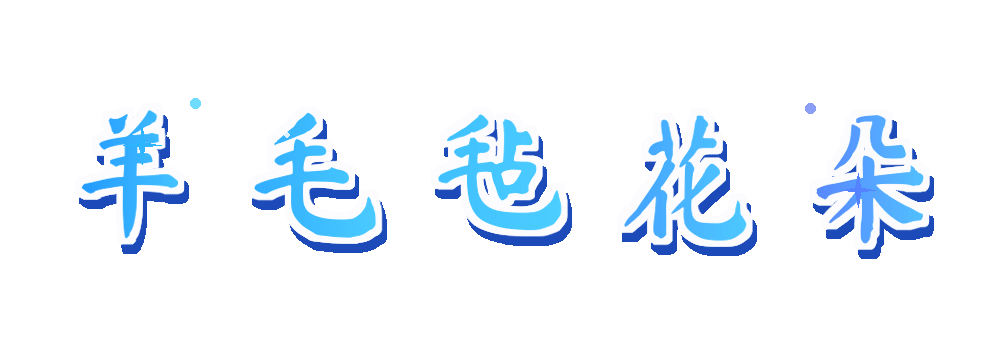
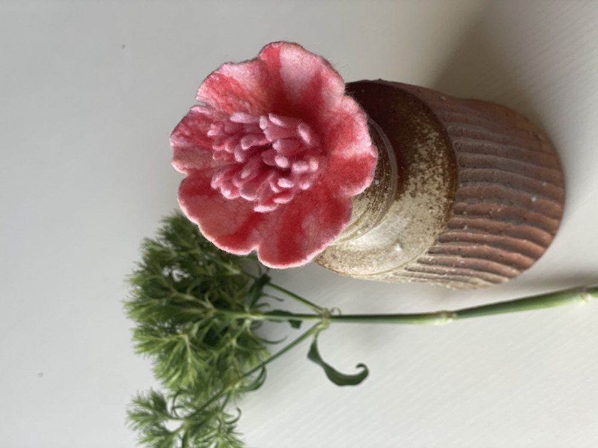

01THE LITTLE FLOWER
一朵花的诞生
柔软的，
也可以很有力量。
从松软的羊毛开始，用戳针一点点塑形。花瓣聚拢又舒展，绿叶在枝头轻轻托住它。
没有捷径，只有重复而专注的手作时光。最后，把这份温柔插进陶瓶里，让它在房间的一角，替春天停留久一点。
— 一份慢慢完成的手作一针一针细致塑出花瓣的弧度
粉与绿柔和的花色和枝叶
慢慢来把时间也织进作品里

一朵花的诞生
从松软的羊毛开始，用戳针一点点塑形。花瓣聚拢又舒展，绿叶在枝头轻轻托住它。
没有捷径，只有重复而专注的手作时光。最后，把这份温柔插进陶瓶里，让它在房间的一角，替春天停留久一点。
— 一份慢慢完成的手作制作中的小片刻
每一片花瓣，
都有自己的形状。



SLOW DOWN, MAKE SOMETHING
完整制作视频即将上线，敬请期待。
一朵花 · 一段安静的时光